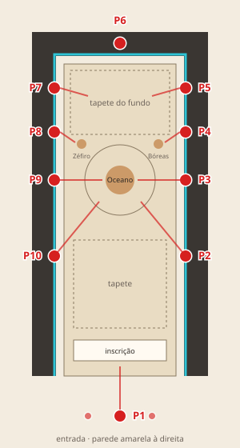

Teste 05 · alvo criado no próprio ponto (continuação do teste 04)
ALVO NO LOCAL
Tira uma fotografia daqui, transforma-a em alvo neste telemóvel (MindAR e Zappar, a partir da mesma imagem) e testa logo.
0. Antes de entrar na sala (com rede)
Descarrega o teste e os dois programas que criam os alvos. Só é preciso uma vez (e outra vez se o teste mudar).
1. Onde estás?

2. Fotografa o alvo
Arrasta o dedo sobre a fotografia para recortar só a parte do mosaico que interessa (sem passadiço nem corrimão).
3. Alvos criados neste telemóvel
Ainda não criaste nenhum alvo.
4. Testa o alvo escolhido
Como fazer o teste
- Prepara o telemóvel à entrada, com rede (passo 0).
- Escolhe o ponto onde estás (passo 1) sempre que mudares de sítio.
- Fotografa (passo 2) com o telemóvel à altura a que um visitante o seguraria. Recorta só o mosaico e carrega em Criar alvo. Espera: pode demorar até um minuto.
- Na RA, aponta a câmara para o lado, carrega em Recomeçar e só então aponta ao alvo: o 1.º reconhecimento mede quanto tempo demora.
- Quando reconhecer, segura parado e carrega em Medir tremor (5 s); depois mexe-te devagar cerca de 20 s e Guardar resultado.
- Depois, testa o mesmo alvo a partir dos pontos vizinhos (escolhe o novo ponto no passo 1): é isso que diz se serve para os visitantes.
Medir no sítio exato da fotografia é o melhor caso possível. Se nem assim reconhecer, aquela parte do mosaico não serve de alvo. O Zappar só funciona com o teste publicado na ZapWorks; os alvos ficam guardados em cada endereço (os do github.io não aparecem na ZapWorks, e o contrário).
Resultados guardados neste telemóvel